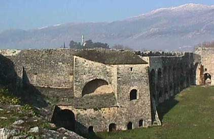

Το κάστρο των Ιωαννίνων
 Χτισμένο σε μικρή χερσόνησο στη λίμνη Παμβώτιδα το κάστρο χρονολογείται από τα χρόνια των βυζαντινών. Ωστόσο ο φιλόδοξος Αλή-Πασάς των Ιωαννίνων, στα τέλη του 18ου αι. ενίσχυσε τις οχυρώσεις δίνοντάς τους τη σημερινή τους μορφή. Μια από τις ισχυρότερες θέσεις του κάστρου αποτελούσε το Τζαμί του Ασλάν-πασά που χτίστηκε το 1618, σε ανάμνηση της συντριβής της επανάστασης του Διονυσίου Φιλόσοφου (1611), και λειτούργησε ως το 1928, ενώ στη νοτιοανατολική γωνιά του χτίστηκε γύρω στο 1795 το σεράι του Αλή, το Φετιχέ Τζαμί. Χτισμένα με ιδιόμορφη αρχιτεκτονική μέσα στο κάστρο συναντάμε τα τούρκικα λουτρά (χαμάμ), το γνωστό Σουφαρί Σαράϊ, το στρατόπεδο του Αλή πασά (όπου εκπαιδεύτηκαν και οι πρωταγωνιστές του ’21 Οδ. Ανδρούτσος, Γ. Καραισκάκης, Μ. Μπότσαρης, Αθ. Διάκος, κ.α.), την τούρκικη βιβλιοθήκη που κτίστηκε στις αρχές του 19ου αιώνα, το Ιτς Καλέ, το εσωτερικό φρούριο. Στην είσοδο του κάστρου υπάρχει ο πλάτανος, όπου το 1807 μαρτύρησε ο αρχηγός της κλεφτουριάς Κατσαντώνης. | ||